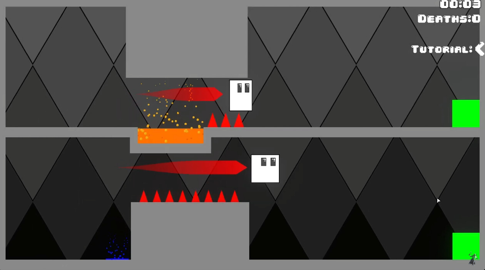
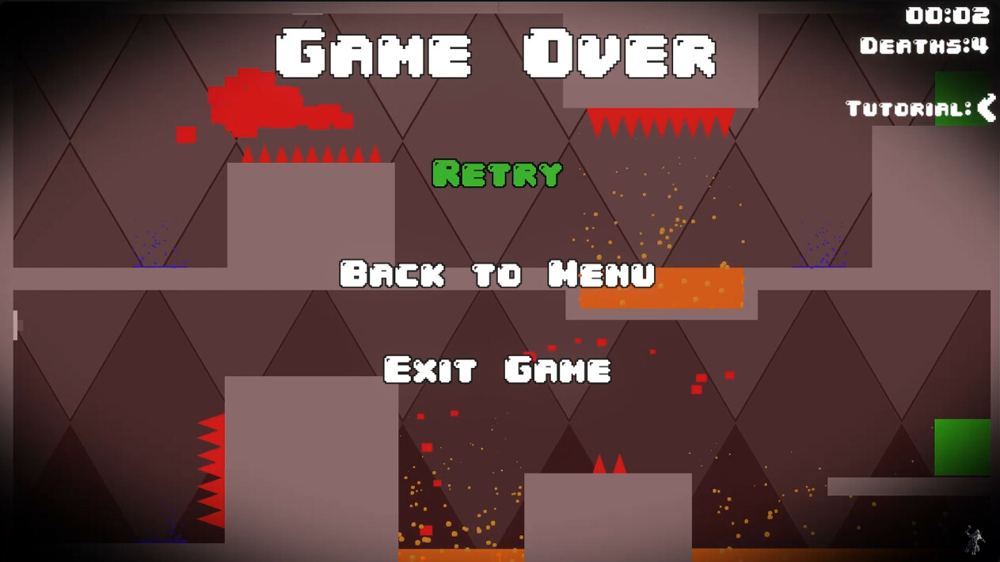
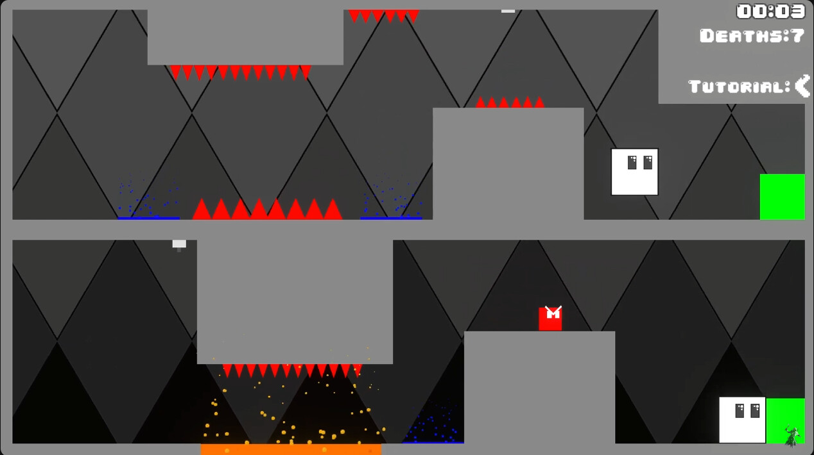

Description:
The Player's soul has been split into 2 and it's the job of the player to get the souls back together.



This game was made for an nice gamejam called: The Hyper Unicorn GameJam (2024). With 3 themes to choose out, I chose bound together. I hope you like the game and have fun with it and don't forget to stay awesome. I even made an Steam Release out of it, if you want more content within the game, wishlist the game there.